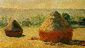
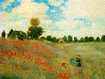
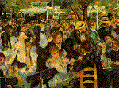
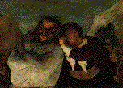
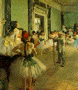
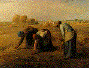
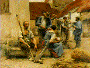
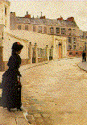
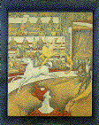
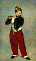

The Hay Ricks; Late Summer, Giverny - 1891, Claude Monet Paintings - Musée d'Orsay Page 1

Poppies; near Argenteuil - 1873, Claude Monet

Ball at the Moulin de la Galette, Montmartre - 1876,
Auguste Renoir.

Crispin and Scapin, also known as Scapin and
Silvester -
circa 1858-1860, Honoré Daumier

The Dancing Lesson - 1871-1874, Edgar Degas

The Gleaners - 1857, Jean-François Millet

Harvesters' Country - 1882 Léon Lhermitte

Waiting, rue de Chateaubriand, Paris - (date unknown),
Jean Béraud

The Circus - 1891, Georges Seurat

The Fifer - 1866, Édouard Manet